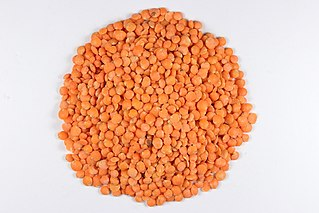

Lentil Stew

Description:
Quick and simple dish.
Great for weeknights.
Ingredients:
- 2 TBSP neutral oil
- 1 medium red onion, diced
- 4 cloves of garlic, minced
- 1 tsp ginger, minced
- 1/2 tsp curry powder
- 1/4 tsp cumin powder
- 1/4 tsp tumeric powder
- 1/4 tsp chili powder
- 3/4 tsp. salt
- 1 can diced tomatoes
- 1 can full-fat coconut milk
- 3/4 cup red lentils, rinsed
Optional to finish:
- fresh ground black pepper
- cilantro
Steps:
- In medium pan, caramelize onion over medium heat.
- Add garlic ginger, cook until fragrant
- Add seasonings, toast until fragrant, and reduce heat to medium low
- Add lentils, coconut milk, and tomatoes. Cook stirring often, for about 25 minutes and the lentils are cooked.
- Serve with rice